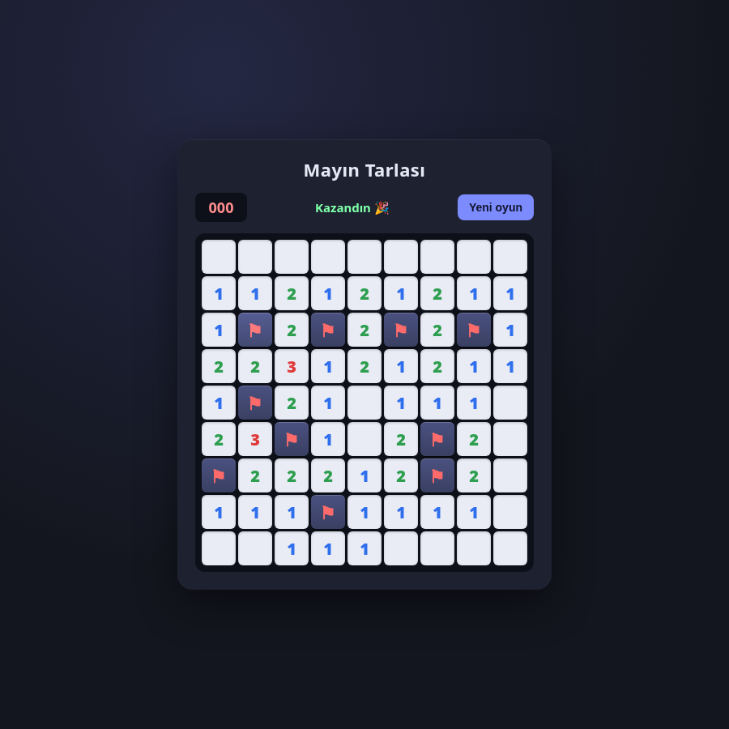
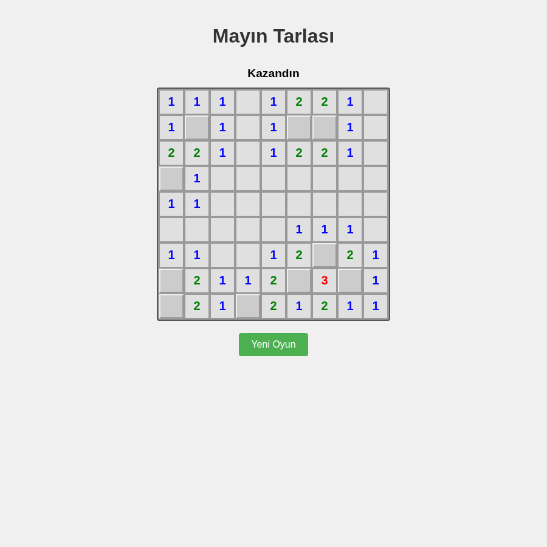
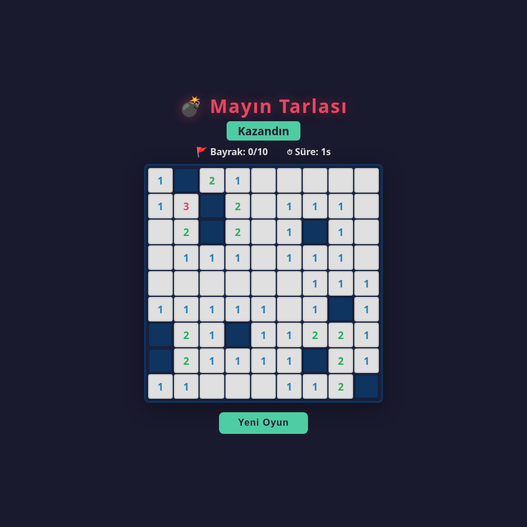
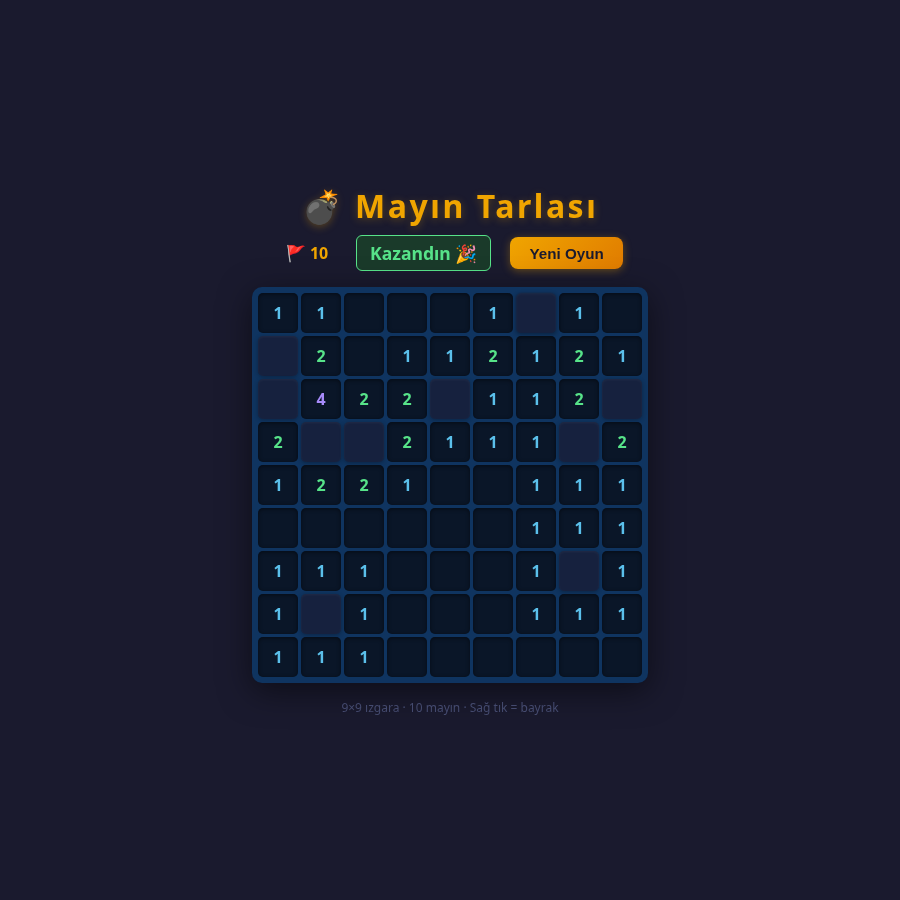
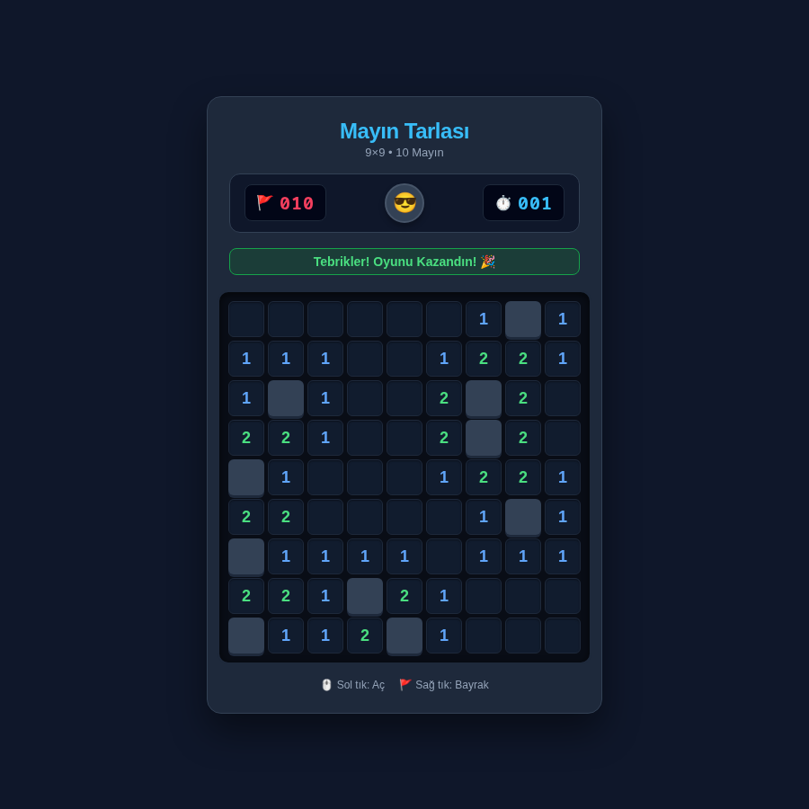

Claude Sonnet 5.516/16 · 1 dk 22 sn
Aynı emirler, aynı klasör yapısı, insan müdahalesi yok. Her model görevini kendi komut satırı ajanında baştan sona yaptı; puanı modelin kendi raporu değil, modelin görmediği testler verdi. 28 Eylül 2026 — Claude Sonnet 5.5'in çıktığı gün.
| Model | G1 Türkçe metin | G2 Mayın tarlası | G3 Hata avı | Toplam | Süre (3 görev) | Kendi testi | G3 test dosyası |
|---|---|---|---|---|---|---|---|
| Claude Sonnet 5.5Anthropic · Claude Code CLI | 43/43 | 16/16 | 11/11 | 70/70 | 2 dk 29 sn | 36 | ✓ |
| Gemini 3.1 ProGoogle · Antigravity CLI | 43/43 | 16/16 | 11/11 | 70/70 | 4 dk 20 sn | 4 | ✓ |
| Claude Opus 4.6Anthropic · Antigravity CLI | 43/43 | 16/16 | 11/11 | 70/70 | 6 dk 43 sn | 44 | ✓ |
| Claude Sonnet 4.6Anthropic · Antigravity CLI | 43/43 | 16/16 | 11/11 | 70/70 | 7 dk 34 sn | 45 | ✓ |
| Gemini 3.8 FlashGoogle · Antigravity CLI | 43/43 | 16/16 | 11/11 | 70/70 | 12 dk 35 sn | 26 | ✓ |
Doğrulukta ayrışma olmadı: tam puan alan her model görev 3'teki beş hatayı da aynı 10 satırlık düzeltmeyle buldu. Bu tur için fark hızda ve modelin kendine yazdığı test sayısında. Daha zor ikinci tur planlanıyor.





İ/ı kuralıyla büyük-küçük harf, URL kısa adı ve sayıyı yazıya çevirme ("bin" ama "bir milyon"). 43 gizli test.
Emir · Gizli testlerTek HTML dosyası. İlk tık güvenli, zincirleme açılma, bayrak, kazan/kaybet. Gerçek tarayıcıda 16 otomatik kontrol.
Emir · Tarayıcı hakemiBeş gizli hatalı bir ödünç sistemi. Test dosyasına dokunmadan düzelt; görünmeyen 11 testle kökten mi düzeltildiği sınandı.
Emir · Gizli testlerHer model yalnız kendi klasöründe, görev başına 25 dakika sınırla çalıştı (calistir.sh). Gizli testler çalışma sırasında depo dışında tutuldu. Puanlama hakem/puanla.py ile yapıldı; ham sonuç _puanlar.json. Süreler duvar saati; modellerin çalıştığı araçlar (Claude Code, Antigravity, omp) farklı olduğundan hız, model + araç ikilisinin hızıdır.